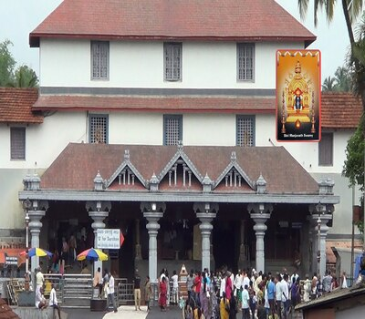
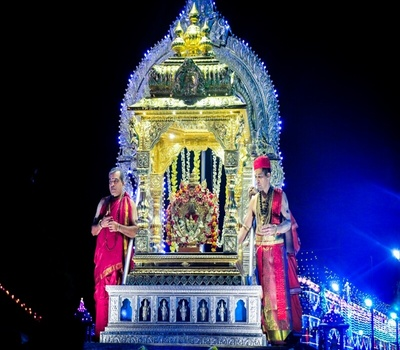
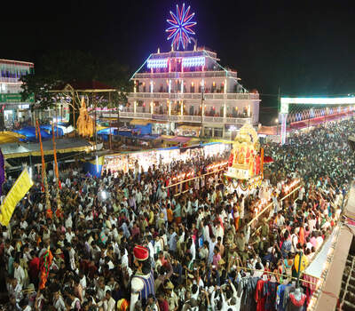
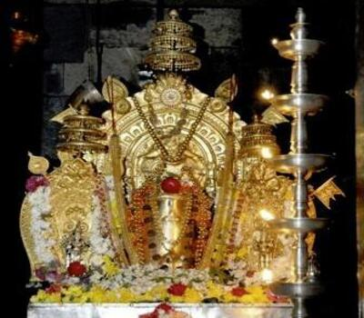

|  |  |
|  |  |
Dharmasthala is an Indian temple town on the banks of the Nethravathi River in the Belthangady taluk of the Dakshina Kannada district in Karnataka, India.
It is a panchayat village, and it is the only village in its gram panchayat.
The town is known for its Dharmasthala Temple which houses the shrine of Shiva, Manjunatha, Ammanavaru, Chandranath and the Dharma Daivas (guardian spirits of Dharma) — Kalarahu, Kalarkayi, Kumaraswamy and Kanyakumari.
The temple is unusual in that it is run by a Jain administration and poojas are conducted by Hindu priests of the Madhva order. Lakshadeepa, the festival of lights, is the annual festival of Dharmasthala in November–December.
On an average the flow of pilgrims is about 10,000 people a day.
A mechanised kitchen provides free food for all pilgrims, and there are guest houses with modern amenities.
Local legend says that the Shiva Linga in Dharmasthala was brought to Dharmasthala by a local person with great powers, named Annappa.
Legend is that he used to work for the Heggade family.
Once when the Heggade he was serving wanted to worship Lord Shiva, Annappa had assured him to get one linga and vanished from the sight.
The next morning, he had already established the linga in Dharmasthala, a few metres away from Heggade's house. Later it was learned that the linga was from Kadri near Mangalore, from the Kadri temple.
By then, Annappa had vanished and he was never again sighted in the vicinity.
Now people in Dharmasthala worship Annappa as Annappa Panjurli, a local god deva and a hero.